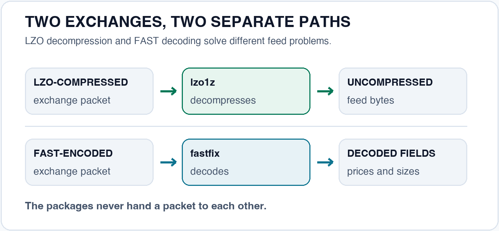

When I joined my current organization and started working with exchange market feeds, different exchanges gave me different problems: one feed needed LZO decompression; another needed FAST decoding. I couldn't find Go libraries I was comfortable using directly in either feed path. The working solution was a .NET application running on Windows; moving the work into Go appeared to mean wrapping C code with cgo or writing the missing pieces myself. The exchanges kept sending packets either way. Very considerate of them.
I chose to write them. In our deployment, the feed-processing workload that had used about 32 CPU cores now uses under one core, with RAM below 2 GB. Those are observations from our system and workload; the standalone decoder benchmarks later in this article measure something different. The production change was large enough to change how we run the feeds.
The two packages are fastfix, for decoding FAST messages, and lzo1z, for LZO decompression. They're small pieces of different feed handlers, but if either gets a value wrong, everything built on top of it starts from the wrong number.
go get github.com/bandari-abhilash/fastfix
View on GitHub →
lzo1z
LZO1Z decompression in pure Go
go get github.com/bandari-abhilash/LZO-GO
View on GitHub →

The gap I kept running into
FAST is a compact way to send market data. Instead of repeating every field in every message, it can send a change from a previous value or leave a value implied. It saves bandwidth and gives the decoder some homework: remember the right previous values. The feed's XML templates also define what those bytes mean.
On the LZO feed, decompression unpacks a block before the message can be read. This package handles the LZO1Z variant. It is easy to mistake that for the better known LZO1X variant because the formats are closely related. They are not interchangeable. A decoder can even return plausible looking bytes that are wrong, which is the worst kind of wrong: the confident kind.
Both packages use only the Go standard library. I can inspect the decoding path, test it against encoded data, and build the feed handlers without a C library in the toolchain. Fewer moving parts, fewer surprises during market hours, when customers are watching every tick.
Getting LZO decompression right
The package is deliberately narrow: it decompresses; it does not compress. The
important detail is a match offset that differs from LZO1X. In the source, the LZO1Z
value is 0x0700, where LZO1X uses 0x0800. That small difference
is enough to make the wrong decoder unsafe to trust for this data. A lot of trouble for
a number that fits in one line of code.
I checked the Go port against compressed vectors generated by the original C library. The tests also cut a valid compressed input at every possible byte and require each incomplete version to fail. If a caller supplies too small an output buffer, the package returns an error instead of writing past it.
Integration is one call into a buffer you own:
import lzo1z "github.com/bandari-abhilash/LZO-GO"
dst := make([]byte, 64*1024) // LZO has no length header; size it from your feed's framing
n, err := lzo1z.Decompress(block, dst)
if err != nil {
return err // truncated, corrupt, or dst too small; never a silent overrun
}
handle(dst[:n])
Go's own benchmark, go test -bench . -benchmem on one Apple M5 core, puts the
package at roughly 2.5 to 3.2 GB/s. The garbage collector gets the day off: zero allocations per call.
BenchmarkDecompress/text-10 2512 ns/op 3181 MB/s 0 B/op 0 allocs/op
BenchmarkDecompress/records-10 9327 ns/op 2487 MB/s 0 B/op 0 allocs/op
BenchmarkDecompress/large-10 19268 ns/op 3114 MB/s 0 B/op 0 allocs/opSpeed still matters less to me than knowing which variant the data actually uses and getting a clear error on damaged input. Fast and wrong is just a quicker way to be wrong.
I also ran the same LZO1Z blocks through three decoders on an Apple M5: this Go package, Java's lzo-java, and C's liblzo2. Each harness checked the complete decompressed output against the original bytes before timing. Higher throughput is faster. Spoiler: Go did not win this one.
| Input | Go lzo1z | Java lzo-java | C liblzo2 |
|---|---|---|---|
| Text · 7,991 B | 3.15 | 7.61 | 21.60 |
| Records · 23,200 B | 2.44 | 3.74 | 9.19 |
| Large · 60,000 B | 3.05 | 7.08 | 23.28 |
LZO1Z: the same records block
23,200 decompressed bytes per call. Each ball represents a different decoder.
Equal work per trip; higher throughput makes each trip shorter. Playback is slowed down for comparison.
These are medians of five 300 ms timed runs per decoder, after a 1.5-second warm-up, using preallocated output buffers and the repository's test vectors. The C and Java harnesses used their safe LZO1Z decoders. On this machine, C was about 3.8 times as fast as Go on the records block; Java was about 1.5 times as fast. The result depends on the input and runtime, as the other two rows show. The harnesses and exact measurements are available for inspection.
Before anyone files Go under “slow”: it doesn't have to be this far behind. The package is still a direct, untuned port of the C decoder. A CPU profile showed about 70% of its time going to one loop that copies each back-reference one byte at a time, which is roughly like moving house one spoon per trip. liblzo2 copies those 4 or 8 bytes at a time when it can. Chunked copies and fewer bounds checks are next on the package's to-do list, and I'll update these numbers when they land.
There is a licensing constraint worth seeing before adoption: this port is GPL-2.0-or-later because it derives from the original LZO code. Check whether that license fits how you plan to distribute your software. Better to read it now than to have a lawyer read it to you later.
The FAST detail that can quietly change a price
The hard part of a stateful format is deciding when its memory should end. Many UDP
market data feeds encode each packet independently. For those feeds, fastfix needs
dec.Ctx.Reset() at the packet boundary. Other feeds can carry state across
messages, so the feed specification decides when to reset.
In code, the reset is one line, and it is the line that matters:
import "github.com/bandari-abhilash/fastfix"
reg, err := fastfix.LoadTemplates(templatesXML) // io.Reader with the feed's XML templates
if err != nil {
return err
}
dec := fastfix.NewDecoder(reg)
for pkt := range packets {
dec.Ctx.Reset() // per-packet feeds: every datagram starts fresh
msgs, err := dec.DecodePacket(pkt)
if err != nil {
return err
}
for _, m := range msgs {
px, ok := m.Int("MDEntryPx") // ok is false if absent or fractional
// ...
}
}If you keep an old value when a packet expects a fresh start, the decoder may still produce a number. It just won't be the number you asked for. That is why the repository tests both cases: repeated decoding without a reset changes the result, and decoding after the proper reset restores the expected value. It is a small test for a costly class of mistake.
I also wanted price handling to be explicit. FAST decimals arrive as a whole number and an exponent; different pairs can represent the same price. fastfix keeps that decimal representation, and its integer accessor refuses a value with a fractional part rather than silently dropping it. For market data, a visible refusal is easier to deal with than a price that has been quietly changed.
The package loads FAST templates at runtime and decodes common field types, groups, and sequences. It can also encode some session messages. Encoding is not yet complete for every FAST operator or structure; the known gaps are listed.
The benchmark, including the part where C++ wins
I compared fastfix with other implementations using one 174-byte market data packet containing ten book entries. Each implementation decoded the same bytes, reset its dictionary for each packet, read the prices and sizes, and had to match a checksum. On one Apple M5 core, fastfix took 2.55 microseconds per packet. The measured goFAST paths took 2.92 and 5.22 microseconds. OpenFAST in Java took 2.41 microseconds. mFAST in C++ took 0.27 microseconds with generated code, or 0.67 microseconds with runtime templates. That's roughly 4 to 9 times as fast as fastfix on this packet.
FAST decoder balls
Each trip represents one decode of the same packet. Lower time means faster back-and-forth motion.
Measured on one Apple M5 core. Motion is slowed down; the values above are the benchmark results. Inspired by Ben Dicken's language balls.
That is one workload, so treat it as a comparison of this packet and these harnesses. The harnesses and conditions are in the benchmark directory so the comparison can be examined and repeated. The result gave me a useful next task: fastfix currently builds fresh maps for decoded messages, allocating about 5.3 KB per packet in this test, which keeps the garbage collector busier than I'd like. I'm working on reducing those allocations now. There is room to make fastfix faster, especially when several feeds are running at once; the C++ result gives me a useful target, not a speedup I can promise yet.
Why I published them
Neither package is a complete market data stack. They solve two specific problems I encountered while building one. I published them because these details are easy to get almost right, and “almost” is a bad place to be with prices.
If you're working with a feed that uses FAST or LZO compression, start with its specification and check which LZO variant it uses. Then look at the packages: fastfix and lzo1z. If you have a packet they decode incorrectly, I'd especially like to see it. A real counterexample is more useful than another flattering benchmark.
I used AI while building them, especially to move through implementation and documentation faster. I still had to write most of the code and check the output against reference data and tests. With market data, code that compiles is a long way from a price you can trust.
Both repositories, and the rest of my work, are on GitHub: github.com/bandari-abhilash. Stars are appreciated; bug reports with real packets even more so.